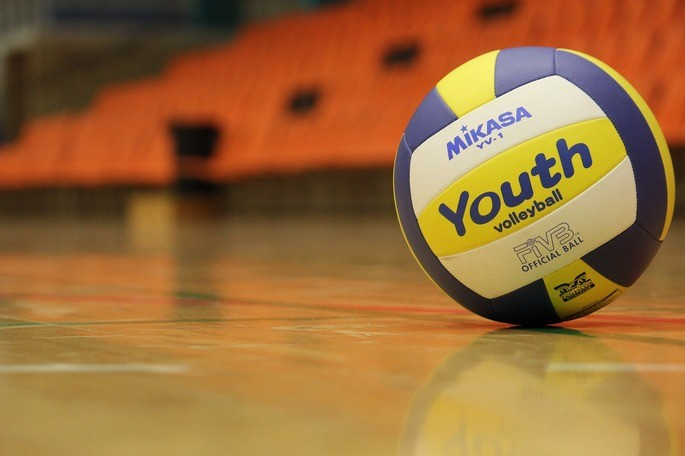

| Historia del voleibol |
- El voleibol es un juego deportivo creado por William George Morgan en el año 1895,
cuando este se desempeñaba como profesor y entrenador deportivo en
la YMCA (Asociación Cristiana de Jóvenes) de Holyoke, Massachusetts (Estados Unidos).
- En el año 1896 Morgan realizó la primera presentación pública del
voleibol en una conferencia de las diversas asociaciones YMCA. Desde ese momento
el voleibol consiguió gran receptividad y comenzó a expandirse por diversos países
|

|
| Reglas del voleibol |
- Campo de juego o cancha
- El campo de juego o cancha es de forma rectangular y debe medir 18 m de largo po 9 m de ancho.
La zona libre del campo debe medir 3 m en cada uno de sus cuatro lados, ya que ahí también se realizan jugadas.
- La red o malla
- La red o malla debe medir entre 9,5 o 10 m de largo y uno de ancho. La malla sobresale hacia las líneas lateralescerca de 50 cm.
Tiene dos bordes para poder identificar la parte superior e inferior de la malla.
- Pelota o balón
- El balón o pelota debe tener una circunferencia entre 65 o 67 cm y un peso entre 260 o 280 g. Su presión debe ser entre 0,3 o 0,325 kg/cm2.
Su exterior debe ser de un material sintético o cuero, acolchado y puede tener una combinación de dos o tres colores.
|

|
| Fundamentos del voleibol |
- Saque o servicio: se inicia en cada jugada por detrás de la línea de fondo. Como estrategia va dirigido al punto débil del equipo contrario.
- Ataque: tiene como fin interceptar cualquier balón del equipo contrario. Se trata de saltar junto a la red con los brazos alzados para devolver el balón al campo contrario, o estrecharle el campo de ataque para buscar que el balón quede fuera de juego. En el bloqueo pueden participar tres jugadores.
- Recepción: controlar el balón para entregarlo al compañero para que este pueda jugarlo.
- Colocación: al jugador que le corresponde hacer el segundo toque debe poner el balón en perfectas condiciones para que el tercer jugador pueda rematarlo en el campo contrario.
|

|